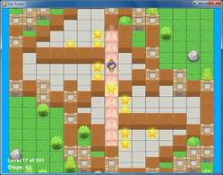
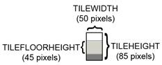
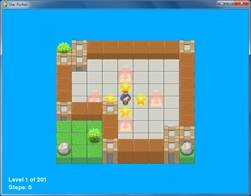

Star Pusher is a Sokoban or “Box Pusher” clone. The player is in a room with several stars. There are star marks on the grounds of some of the tile sprites in the room. The player must figure out how to push the stars on top of the tiles with star marks. The player cannot push a star if there is a wall or another star behind it. The player cannot pull stars, so if a star gets pushed into a corner, the player will have to restart the level. When all of the stars have been pushed onto star-marked floor tiles, the level is complete and the next level starts.
Each level is made up of a 2D grid of tile images. Tile sprites are images of the same size that can be placed next to each other to form more complex images. With a few floor and wall tiles, we can create levels of many interesting shapes and sizes.
The level files are not included in the source code. Instead, you can either create the level files yourself or download them. A level file with 201 levels can be downloaded from http://invpy.com/starPusherLevels.txt. When you run the Star Pusher program, make sure that this level file is in the same folder as the starpusher.py file. Otherwise you will get this error message: AssertionError: Cannot find the level file: starPusherLevels.txt
The level designs were originally made David W. Skinner. You can download more puzzles from his website at http://sneezingtiger.com/sokoban/levels.html.
This source code can be downloaded from http://invpy.com/starpusher.py. If you get any error messages, look at the line number that is mentioned in the error message and check your code for any typos. You can also copy and paste your code into the web form at http://invpy.com/diff/starpusher to see if the differences between your code and the code in the book.
The level file can be downloaded from http://invpy.com/starPusherLevels.txt. The tiles can be downloaded from http://invpy.com/starPusherImages.zip.
Also, just like the squirrel, grass, and enemy “objects” in the Squirrel Eat Squirrel game, when I say “map objects”, “game state objects”, or “level objects” in this chapter, I do not mean objects in the Object-Oriented Programming sense. These “objects” are really just dictionary values, but it is easier to refer to them as objects since they represent things in the game world.
1. # Star Pusher (a Sokoban clone)
2. # By Al Sweigart al@inventwithpython.com
3. # http://inventwithpython.com/pygame
4. # Creative Commons BY-NC-SA 3.0 US
5.
6. import random, sys, copy, os, pygame
7. from pygame.locals import *
8.
9. FPS = 30 # frames per second to update the screen
10. WINWIDTH = 800 # width of the program's window, in pixels
11. WINHEIGHT = 600 # height in pixels
12. HALF_WINWIDTH = int(WINWIDTH / 2)
13. HALF_WINHEIGHT = int(WINHEIGHT / 2)
14.
15. # The total width and height of each tile in pixels.
16. TILEWIDTH = 50
17. TILEHEIGHT = 85
18. TILEFLOORHEIGHT = 45
19.
20. CAM_MOVE_SPEED = 5 # how many pixels per frame the camera moves
21.
22. # The percentage of outdoor tiles that have additional
23. # decoration on them, such as a tree or rock.
24. OUTSIDE_DECORATION_PCT = 20
25.
26. BRIGHTBLUE = ( 0, 170, 255)
27. WHITE = (255, 255, 255)
28. BGCOLOR = BRIGHTBLUE
29. TEXTCOLOR = WHITE
30.
31. UP = 'up'
32. DOWN = 'down'
33. LEFT = 'left'
34. RIGHT = 'right'
35.
36.
37. def main():
38. global FPSCLOCK, DISPLAYSURF, IMAGESDICT, TILEMAPPING, OUTSIDEDECOMAPPING, BASICFONT, PLAYERIMAGES, currentImage
39.
40. # Pygame initialization and basic set up of the global variables.
41. pygame.init()
42. FPSCLOCK = pygame.time.Clock()
43.
44. # Because the Surface object stored in DISPLAYSURF was returned
45. # from the pygame.display.set_mode() function, this is the
46. # Surface object that is drawn to the actual computer screen
47. # when pygame.display.update() is called.
48. DISPLAYSURF = pygame.display.set_mode((WINWIDTH, WINHEIGHT))
49.
50. pygame.display.set_caption('Star Pusher')
51. BASICFONT = pygame.font.Font('freesansbold.ttf', 18)
52.
53. # A global dict value that will contain all the Pygame
54. # Surface objects returned by pygame.image.load().
55. IMAGESDICT = {'uncovered goal': pygame.image.load('RedSelector.png'),
56. 'covered goal': pygame.image.load('Selector.png'),
57. 'star': pygame.image.load('Star.png'),
58. 'corner': pygame.image.load('Wall Block Tall.png'),
59. 'wall': pygame.image.load('Wood Block Tall.png'),
60. 'inside floor': pygame.image.load('Plain Block.png'),
61. 'outside floor': pygame.image.load('Grass Block.png'),
62. 'title': pygame.image.load('star_title.png'),
63. 'solved': pygame.image.load('star_solved.png'),
64. 'princess': pygame.image.load('princess.png'),
65. 'boy': pygame.image.load('boy.png'),
66. 'catgirl': pygame.image.load('catgirl.png'),
67. 'horngirl': pygame.image.load('horngirl.png'),
68. 'pinkgirl': pygame.image.load('pinkgirl.png'),
69. 'rock': pygame.image.load('Rock.png'),
70. 'short tree': pygame.image.load('Tree_Short.png'),
71. 'tall tree': pygame.image.load('Tree_Tall.png'),
72. 'ugly tree': pygame.image.load('Tree_Ugly.png')}
73.
74. # These dict values are global, and map the character that appears
75. # in the level file to the Surface object it represents.
76. TILEMAPPING = {'x': IMAGESDICT['corner'],
77. '#': IMAGESDICT['wall'],
78. 'o': IMAGESDICT['inside floor'],
79. ' ': IMAGESDICT['outside floor']}
80. OUTSIDEDECOMAPPING = {'1': IMAGESDICT['rock'],
81. '2': IMAGESDICT['short tree'],
82. '3': IMAGESDICT['tall tree'],
83. '4': IMAGESDICT['ugly tree']}
84.
85. # PLAYERIMAGES is a list of all possible characters the player can be.
86. # currentImage is the index of the player's current player image.
87. currentImage = 0
88. PLAYERIMAGES = [IMAGESDICT['princess'],
89. IMAGESDICT['boy'],
90. IMAGESDICT['catgirl'],
91. IMAGESDICT['horngirl'],
92. IMAGESDICT['pinkgirl']]
93.
94. startScreen() # show the title screen until the user presses a key
95.
96. # Read in the levels from the text file. See the readLevelsFile() for
97. # details on the format of this file and how to make your own levels.
98. levels = readLevelsFile('starPusherLevels.txt')
99. currentLevelIndex = 0
100.
101. # The main game loop. This loop runs a single level, when the user
102. # finishes that level, the next/previous level is loaded.
103. while True: # main game loop
104. # Run the level to actually start playing the game:
105. result = runLevel(levels, currentLevelIndex)
106.
107. if result in ('solved', 'next'):
108. # Go to the next level.
109. currentLevelIndex += 1
110. if currentLevelIndex >= len(levels):
111. # If there are no more levels, go back to the first one.
112. currentLevelIndex = 0
113. elif result == 'back':
114. # Go to the previous level.
115. currentLevelIndex -= 1
116. if currentLevelIndex < 0:
117. # If there are no previous levels, go to the last one.
118. currentLevelIndex = len(levels)-1
119. elif result == 'reset':
120. pass # Do nothing. Loop re-calls runLevel() to reset the level
121.
122.
123. def runLevel(levels, levelNum):
124. global currentImage
125. levelObj = levels[levelnum]
126. mapObj = decorateMap(levelObj['mapObj'], levelObj['startState']['player'])
127. gameStateObj = copy.deepcopy(levelObj['startState'])
128. mapNeedsRedraw = True # set to True to call drawMap()
129. levelSurf = BASICFONT.render('Level %s of %s' % (levelObj['levelNum'] + 1, totalNumOfLevels), 1, TEXTCOLOR)
130. levelRect = levelSurf.get_rect()
131. levelRect.bottomleft = (20, WINHEIGHT - 35)
132. mapWidth = len(mapObj) * TILEWIDTH
133. mapHeight = (len(mapObj[0]) - 1) * (TILEHEIGHT - TILEFLOORHEIGHT) + TILEHEIGHT
134. MAX_CAM_X_PAN = abs(HALF_WINHEIGHT - int(mapHeight / 2)) + TILEWIDTH
135. MAX_CAM_Y_PAN = abs(HALF_WINWIDTH - int(mapWidth / 2)) + TILEHEIGHT
136.
137. levelIsComplete = False
138. # Track how much the camera has moved:
139. cameraOffsetX = 0
140. cameraOffsetY = 0
141. # Track if the keys to move the camera are being held down:
142. cameraUp = False
143. cameraDown = False
144. cameraLeft = False
145. cameraRight = False
146.
147. while True: # main game loop
148. # Reset these variables:
149. playerMoveTo = None
150. keyPressed = False
151.
152. for event in pygame.event.get(): # event handling loop
153. if event.type == QUIT:
154. # Player clicked the "X" at the corner of the window.
155. terminate()
156.
157. elif event.type == KEYDOWN:
158. # Handle key presses
159. keyPressed = True
160. if event.key == K_LEFT:
161. playerMoveTo = LEFT
162. elif event.key == K_RIGHT:
163. playerMoveTo = RIGHT
164. elif event.key == K_UP:
165. playerMoveTo = UP
166. elif event.key == K_DOWN:
167. playerMoveTo = DOWN
168.
169. # Set the camera move mode.
170. elif event.key == K_a:
171. cameraLeft = True
172. elif event.key == K_d:
173. cameraRight = True
174. elif event.key == K_w:
175. cameraUp = True
176. elif event.key == K_s:
177. cameraDown = True
178.
179. elif event.key == K_n:
180. return 'next'
181. elif event.key == K_b:
182. return 'back'
183.
184. elif event.key == K_ESCAPE:
185. terminate() # Esc key quits.
186. elif event.key == K_BACKSPACE:
187. return 'reset' # Reset the level.
188. elif event.key == K_p:
189. # Change the player image to the next one.
190. currentImage += 1
191. if currentImage >= len(PLAYERIMAGES):
192. # After the last player image, use the first one.
193. currentImage = 0
194. mapNeedsRedraw = True
195.
196. elif event.type == KEYUP:
197. # Unset the camera move mode.
198. if event.key == K_a:
199. cameraLeft = False
200. elif event.key == K_d:
201. cameraRight = False
202. elif event.key == K_w:
203. cameraUp = False
204. elif event.key == K_s:
205. cameraDown = False
206.
207. if playerMoveTo != None and not levelIsComplete:
208. # If the player pushed a key to move, make the move
209. # (if possible) and push any stars that are pushable.
210. moved = makeMove(mapObj, gameStateObj, playerMoveTo)
211.
212. if moved:
213. # increment the step counter.
214. gameStateObj['stepCounter'] += 1
215. mapNeedsRedraw = True
216.
217. if isLevelFinished(levelObj, gameStateObj):
218. # level is solved, we should show the "Solved!" image.
219. levelIsComplete = True
220. keyPressed = False
221.
222. DISPLAYSURF.fill(BGCOLOR)
223.
224. if mapNeedsRedraw:
225. mapSurf = drawMap(mapObj, gameStateObj, levelObj['goals'])
226. mapNeedsRedraw = False
227.
228. if cameraUp and cameraOffsetY < MAX_CAM_X_PAN:
229. cameraOffsetY += CAM_MOVE_SPEED
230. elif cameraDown and cameraOffsetY > -MAX_CAM_X_PAN:
231. cameraOffsetY -= CAM_MOVE_SPEED
232. if cameraLeft and cameraOffsetX < MAX_CAM_Y_PAN:
233. cameraOffsetX += CAM_MOVE_SPEED
234. elif cameraRight and cameraOffsetX > -MAX_CAM_Y_PAN:
235. cameraOffsetX -= CAM_MOVE_SPEED
236.
237. # Adjust mapSurf's Rect object based on the camera offset.
238. mapSurfRect = mapSurf.get_rect()
239. mapSurfRect.center = (HALF_WINWIDTH + cameraOffsetX, HALF_WINHEIGHT + cameraOffsetY)
240.
241. # Draw mapSurf to the DISPLAYSURF Surface object.
242. DISPLAYSURF.blit(mapSurf, mapSurfRect)
243.
244. DISPLAYSURF.blit(levelSurf, levelRect)
245. stepSurf = BASICFONT.render('Steps: %s' % (gameStateObj['stepCounter']), 1, TEXTCOLOR)
246. stepRect = stepSurf.get_rect()
247. stepRect.bottomleft = (20, WINHEIGHT - 10)
248. DISPLAYSURF.blit(stepSurf, stepRect)
249.
250. if levelIsComplete:
251. # is solved, show the "Solved!" image until the player
252. # has pressed a key.
253. solvedRect = IMAGESDICT['solved'].get_rect()
254. solvedRect.center = (HALF_WINWIDTH, HALF_WINHEIGHT)
255. DISPLAYSURF.blit(IMAGESDICT['solved'], solvedRect)
256.
257. if keyPressed:
258. return 'solved'
259.
260. pygame.display.update() # draw DISPLAYSURF to the screen.
261. FPSCLOCK.tick()
262.
263.
274. def decorateMap(mapObj, startxy):
275. """Makes a copy of the given map object and modifies it.
276. Here is what is done to it:
277. * Walls that are corners are turned into corner pieces.
278. * The outside/inside floor tile distinction is made.
279. * Tree/rock decorations are randomly added to the outside tiles.
280.
281. Returns the decorated map object."""
282.
283. startx, starty = startxy # Syntactic sugar
284.
285. # Copy the map object so we don't modify the original passed
286. mapObjCopy = copy.deepcopy(mapObj)
287.
288. # Remove the non-wall characters from the map data
289. for x in range(len(mapObjCopy)):
290. for y in range(len(mapObjCopy[0])):
291. if mapObjCopy[x][y] in ('$', '.', '@', '+', '*'):
292. mapObjCopy[x][y] = ' '
293.
294. # Flood fill to determine inside/outside floor tiles.
295. floodFill(mapObjCopy, startx, starty, ' ', 'o')
296.
297. # Convert the adjoined walls into corner tiles.
298. for x in range(len(mapObjCopy)):
299. for y in range(len(mapObjCopy[0])):
300.
301. if mapObjCopy[x][y] == '#':
302. if (isWall(mapObjCopy, x, y-1) and isWall(mapObjCopy, x+1, y)) or \
303. (isWall(mapObjCopy, x+1, y) and isWall(mapObjCopy, x, y+1)) or \
304. (isWall(mapObjCopy, x, y+1) and isWall(mapObjCopy, x-1, y)) or \
305. (isWall(mapObjCopy, x-1, y) and isWall(mapObjCopy, x, y-1)):
306. mapObjCopy[x][y] = 'x'
307.
308. elif mapObjCopy[x][y] == ' ' and random.randint(0, 99) < OUTSIDE_DECORATION_PCT:
309. mapObjCopy[x][y] = random.choice(list(OUTSIDEDECOMAPPING.keys()))
310.
311. return mapObjCopy
312.
313.
314. def isBlocked(mapObj, gameStateObj, x, y):
315. """Returns True if the (x, y) position on the map is
316. blocked by a wall or star, otherwise return False."""
317.
318. if isWall(mapObj, x, y):
319. return True
320.
321. elif x < 0 or x >= len(mapObj) or y < 0 or y >= len(mapObj[x]):
322. return True # x and y aren't actually on the map.
323.
324. elif (x, y) in gameStateObj['stars']:
325. return True # a star is blocking
326.
327. return False
328.
329.
330. def makeMove(mapObj, gameStateObj, playerMoveTo):
331. """Given a map and game state object, see if it is possible for the
332. player to make the given move. If it is, then change the player's
333. position (and the position of any pushed star). If not, do nothing.
334.
335. Returns True if the player moved, otherwise False."""
336.
337. # Make sure the player can move in the direction they want.
338. playerx, playery = gameStateObj['player']
339.
340. # This variable is "syntactic sugar". Typing "stars" is more
341. # readable than typing "gameStateObj['stars']" in our code.
342. stars = gameStateObj['stars']
343.
344. # The code for handling each of the directions is so similar aside
345. # from adding or subtracting 1 to the x/y coordinates. We can
346. # simplify it by using the xOffset and yOffset variables.
347. if playerMoveTo == UP:
348. xOffset = 0
349. yOffset = -1
350. elif playerMoveTo == RIGHT:
351. xOffset = 1
352. yOffset = 0
353. elif playerMoveTo == DOWN:
354. xOffset = 0
355. yOffset = 1
356. elif playerMoveTo == LEFT:
357. xOffset = -1
358. yOffset = 0
359.
360. # See if the player can move in that direction.
361. if isWall(mapObj, playerx + xOffset, playery + yOffset):
362. return False
363. else:
364. if (playerx + xOffset, playery + yOffset) in stars:
365. # There is a star in the way, see if the player can push it.
366. if not isBlocked(mapObj, gameStateObj, playerx + (xOffset*2), playery + (yOffset*2)):
367. # Move the star.
368. ind = stars.index((playerx + xOffset, playery + yOffset))
369. stars[ind] = (stars[ind][0] + xOffset, stars[ind][1] + yOffset)
370. else:
371. return False
372. # Move the player upwards.
373. gameStateObj['player'] = (playerx + xOffset, playery + yOffset)
374. return True
375.
376.
377. def startScreen():
378. """Display the start screen (which has the title and instructions)
379. until the player presses a key. Returns None."""
380.
381. # Position the title image.
382. titleRect = IMAGESDICT['title'].get_rect()
383. topCoord = 50 # topCoord tracks where to position the top of the text
384. titleRect.top = topCoord
385. titleRect.centerx = HALF_WINWIDTH
386. topCoord += titleRect.height
387.
388. # Unfortunately, Pygame's font & text system only shows one line at
389. # a time, so we can't use strings with \n newline characters in them.
390. # So we will use a list with each line in it.
391. instructionText = ['Push the stars over the marks.',
392. 'Arrow keys to move, WASD for camera control, P to change character.',
393. 'Backspace to reset level, Esc to quit.',
394. 'N for next level, B to go back a level.']
395.
396. # Start with drawing a blank color to the entire window:
397. DISPLAYSURF.fill(BGCOLOR)
398.
399. # Draw the title image to the window:
400. DISPLAYSURF.blit(IMAGESDICT['title'], titleRect)
401.
402. # Position and draw the text.
403. for i in range(len(instructionText)):
404. instSurf = BASICFONT.render(instructionText[i], 1, TEXTCOLOR)
405. instRect = instSurf.get_rect()
406. topCoord += 10 # 10 pixels will go in between each line of text.
407. instRect.top = topCoord
408. instRect.centerx = HALF_WINWIDTH
409. topCoord += instRect.height # Adjust for the height of the line.
410. DISPLAYSURF.blit(instSurf, instRect)
411.
412. while True: # Main loop for the start screen.
413. for event in pygame.event.get():
414. if event.type == QUIT:
415. terminate()
416. elif event.type == KEYDOWN:
417. if event.key == K_ESCAPE:
418. terminate()
419. return # user has pressed a key, so return.
420.
421. # Display the DISPLAYSURF contents to the actual screen.
422. pygame.display.update()
423. FPSCLOCK.tick()
424.
425.
426. def readLevelsFile(filename):
427. assert os.path.exists(filename), 'Cannot find the level file: %s' % (filename)
428. mapFile = open(filename, 'r')
429. # Each level must end with a blank line
430. content = mapFile.readlines() + ['\r\n']
431. mapFile.close()
432.
433. levels = [] # Will contain a list of level objects.
434. levelNum = 0
435. mapTextLines = [] # contains the lines for a single level's map.
436. mapObj = [] # the map object made from the data in mapTextLines
437. for lineNum in range(len(content)):
438. # Process each line that was in the level file.
439. line = content[lineNum].rstrip('\r\n')
440.
441. if ';' in line:
442. # Ignore the ; lines, they're comments in the level file.
443. line = line[:line.find(';')]
444.
445. if line != '':
446. # This line is part of the map.
447. mapTextLines.append(line)
448. elif line == '' and len(mapTextLines) > 0:
449. # A blank line indicates the end of a level's map in the file.
450. # Convert the text in mapTextLines into a level object.
451.
452. # Find the longest row in the map.
453. maxWidth = -1
454. for i in range(len(mapTextLines)):
455. if len(mapTextLines[i]) > maxWidth:
456. maxWidth = len(mapTextLines[i])
457. # Add spaces to the ends of the shorter rows. This
458. # ensures the map will be rectangular.
459. for i in range(len(mapTextLines)):
460. mapTextLines[i] += ' ' * (maxWidth - len(mapTextLines[i]))
461.
462. # Convert mapTextLines to a map object.
463. for x in range(len(mapTextLines[0])):
464. mapObj.append([])
465. for y in range(len(mapTextLines)):
466. for x in range(maxWidth):
467. mapObj[x].append(mapTextLines[y][x])
468.
469. # Loop through the spaces in the map and find the @, ., and $
470. # characters for the starting game state.
471. startx = None # The x and y for the player's starting position
472. starty = None
473. goals = [] # list of (x, y) tuples for each goal.
474. stars = [] # list of (x, y) for each star's starting position.
475. for x in range(maxWidth):
476. for y in range(len(mapObj[x])):
477. if mapObj[x][y] in ('@', '+'):
478. # '@' is player, '+' is player & goal
479. startx = x
480. starty = y
481. if mapObj[x][y] in ('.', '+', '*'):
482. # '.' is goal, '*' is star & goal
483. goals.append((x, y))
484. if mapObj[x][y] in ('$', '*'):
485. # '$' is star
486. stars.append((x, y))
487.
488. # Basic level design sanity checks:
489. assert startx != None and starty != None, 'Level %s (around line %s) in %s is missing a "@" or "+" to mark the start point.' % (levelNum+1, lineNum, filename)
490. assert len(goals) > 0, 'Level %s (around line %s) in %s must have at least one goal.' % (levelNum+1, lineNum, filename)
491. assert len(stars) >= len(goals), 'Level %s (around line %s) in %s is impossible to solve. It has %s goals but only %s stars.' % (levelNum+1, lineNum, filename, len(goals), len(stars))
492.
493. # Create level object and starting game state object.
494. gameStateObj = {'player': (startx, starty),
495. 'stepCounter': 0,
496. 'stars': stars}
497. levelObj = {'width': maxWidth,
498. 'height': len(mapObj),
499. 'mapObj': mapObj,
500. 'goals': goals,
501. 'startState': gameStateObj}
502.
503. levels.append(levelObj)
504.
505. # Reset the variables for reading the next map.
506. mapTextLines = []
507. mapObj = []
508. gameStateObj = {}
509. levelNum += 1
510. return levels
511.
512.
513. def floodFill(mapObj, x, y, oldCharacter, newCharacter):
514. """Changes any values matching oldCharacter on the map object to
515. newCharacter at the (x, y) position, and does the same for the
516. positions to the left, right, down, and up of (x, y), recursively."""
517.
518. # In this game, the flood fill algorithm creates the inside/outside
519. # floor distinction. This is a "recursive" function.
520. # For more info on the Flood Fill algorithm, see:
521. # http://en.wikipedia.org/wiki/Flood_fill
522. if mapObj[x][y] == oldCharacter:
523. mapObj[x][y] = newCharacter
524.
525. if x < len(mapObj) - 1 and mapObj[x+1][y] == oldCharacter:
526. floodFill(mapObj, x+1, y, oldCharacter, newCharacter) # call right
527. if x > 0 and mapObj[x-1][y] == oldCharacter:
528. floodFill(mapObj, x-1, y, oldCharacter, newCharacter) # call left
529. if y < len(mapObj[x]) - 1 and mapObj[x][y+1] == oldCharacter:
530. floodFill(mapObj, x, y+1, oldCharacter, newCharacter) # call down
531. if y > 0 and mapObj[x][y-1] == oldCharacter:
532. floodFill(mapObj, x, y-1, oldCharacter, newCharacter) # call up
533.
534.
535. def drawMap(mapObj, gameStateObj, goals):
536. """Draws the map to a Surface object, including the player and
537. stars. This function does not call pygame.display.update(), nor
538. does it draw the "Level" and "Steps" text in the corner."""
539.
540. # mapSurf will be the single Surface object that the tiles are drawn
541. # on, so that it is easy to position the entire map on the DISPLAYSURF
542. # Surface object. First, the width and height must be calculated.
543. mapSurfWidth = len(mapObj) * TILEWIDTH
544. mapSurfHeight = (len(mapObj[0]) - 1) * (TILEHEIGHT - TILEFLOORHEIGHT) + TILEHEIGHT
545. mapSurf = pygame.Surface((mapSurfWidth, mapSurfHeight))
546. mapSurf.fill(BGCOLOR) # start with a blank color on the surface.
547.
548. # Draw the tile sprites onto this surface.
549. for x in range(len(mapObj)):
550. for y in range(len(mapObj[x])):
551. spaceRect = pygame.Rect((x * TILEWIDTH, y * (TILEHEIGHT - TILEFLOORHEIGHT), TILEWIDTH, TILEHEIGHT))
552. if mapObj[x][y] in TILEMAPPING:
553. baseTile = TILEMAPPING[mapObj[x][y]]
554. elif mapObj[x][y] in OUTSIDEDECOMAPPING:
555. baseTile = TILEMAPPING[' ']
556.
557. # First draw the base ground/wall tile.
558. mapSurf.blit(baseTile, spaceRect)
559.
560. if mapObj[x][y] in OUTSIDEDECOMAPPING:
561. # Draw any tree/rock decorations that are on this tile.
562. mapSurf.blit(OUTSIDEDECOMAPPING[mapObj[x][y]], spaceRect)
563. elif (x, y) in gameStateObj['stars']:
564. if (x, y) in goals:
565. # A goal AND star are on this space, draw goal first.
566. mapSurf.blit(IMAGESDICT['covered goal'], spaceRect)
567. # Then draw the star sprite.
568. mapSurf.blit(IMAGESDICT['star'], spaceRect)
569. elif (x, y) in goals:
570. # Draw a goal without a star on it.
571. mapSurf.blit(IMAGESDICT['uncovered goal'], spaceRect)
572.
573. # Last draw the player on the board.
574. if (x, y) == gameStateObj['player']:
575. # Note: The value "currentImage" refers
576. # to a key in "PLAYERIMAGES" which has the
577. # specific player image we want to show.
578. mapSurf.blit(PLAYERIMAGES[currentImage], spaceRect)
579.
580. return mapSurf
581.
582.
583. def isLevelFinished(levelObj, gameStateObj):
584. """Returns True if all the goals have stars in them."""
585. for goal in levelObj['goals']:
586. if goal not in gameStateObj['stars']:
587. # Found a space with a goal but no star on it.
588. return False
589. return True
590.
591.
592. def terminate():
593. pygame.quit()
594. sys.exit()
595.
596.
597. if __name__ == '__main__':
598. main()
1. # Star Pusher (a Sokoban clone)
2. # By Al Sweigart al@inventwithpython.com
3. # http://inventwithpython.com/pygame
4. # Creative Commons BY-NC-SA 3.0 US
5.
6. import random, sys, copy, os, pygame
7. from pygame.locals import *
8.
9. FPS = 30 # frames per second to update the screen
10. WINWIDTH = 800 # width of the program's window, in pixels
11. WINHEIGHT = 600 # height in pixels
12. HALF_WINWIDTH = int(WINWIDTH / 2)
13. HALF_WINHEIGHT = int(WINHEIGHT / 2)
14.
15. # The total width and height of each tile in pixels.
16. TILEWIDTH = 50
17. TILEHEIGHT = 85
18. TILEFLOORHEIGHT = 45
19.
20. CAM_MOVE_SPEED = 5 # how many pixels per frame the camera moves
21.
22. # The percentage of outdoor tiles that have additional
23. # decoration on them, such as a tree or rock.
24. OUTSIDE_DECORATION_PCT = 20
25.
26. BRIGHTBLUE = ( 0, 170, 255)
27. WHITE = (255, 255, 255)
28. BGCOLOR = BRIGHTBLUE
29. TEXTCOLOR = WHITE
30.
31. UP = 'up'
32. DOWN = 'down'
33. LEFT = 'left'
34. RIGHT = 'right'
These constants are used in various parts of the program. The TILEWIDTH and TILEHEIGHT variables show that each of the tile images are 50 pixels wide and 85 pixels tall. However, these tiles overlap with each other when drawn on the screen. (This is explained later.) The TILEFLOORHEIGHT refers to the fact that the part of the tile that represents the floor is 45 pixels tall. Here is a diagram of the plain floor image:

The grassy tiles outside of the level’s room will sometimes have extra decorations added to them (such as trees or rocks). The OUTSIDE_DECORATION_PCT constant shows what percentage of these tiles will randomly have these decorations.
37. def main():
38. global FPSCLOCK, DISPLAYSURF, IMAGESDICT, TILEMAPPING, OUTSIDEDECOMAPPING, BASICFONT, PLAYERIMAGES, currentImage
39.
40. # Pygame initialization and basic set up of the global variables.
41. pygame.init()
42. FPSCLOCK = pygame.time.Clock()
43.
44. # Because the Surface object stored in DISPLAYSURF was returned
45. # from the pygame.display.set_mode() function, this is the
46. # Surface object that is drawn to the actual computer screen
47. # when pygame.display.update() is called.
48. DISPLAYSURF = pygame.display.set_mode((WINWIDTH, WINHEIGHT))
49.
50. pygame.display.set_caption('Star Pusher')
51. BASICFONT = pygame.font.Font('freesansbold.ttf', 18)
This is the usual Pygame setup that happens at the beginning of the program.
53. # A global dict value that will contain all the Pygame
54. # Surface objects returned by pygame.image.load().
55. IMAGESDICT = {'uncovered goal': pygame.image.load('RedSelector.png'),
56. 'covered goal': pygame.image.load('Selector.png'),
57. 'star': pygame.image.load('Star.png'),
58. 'corner': pygame.image.load('Wall Block Tall.png'),
59. 'wall': pygame.image.load('Wood Block Tall.png'),
60. 'inside floor': pygame.image.load('Plain Block.png'),
61. 'outside floor': pygame.image.load('Grass Block.png'),
62. 'title': pygame.image.load('star_title.png'),
63. 'solved': pygame.image.load('star_solved.png'),
64. 'princess': pygame.image.load('princess.png'),
65. 'boy': pygame.image.load('boy.png'),
66. 'catgirl': pygame.image.load('catgirl.png'),
67. 'horngirl': pygame.image.load('horngirl.png'),
68. 'pinkgirl': pygame.image.load('pinkgirl.png'),
69. 'rock': pygame.image.load('Rock.png'),
70. 'short tree': pygame.image.load('Tree_Short.png'),
71. 'tall tree': pygame.image.load('Tree_Tall.png'),
72. 'ugly tree': pygame.image.load('Tree_Ugly.png')}
The IMAGESDICT is a dictionary where all of the loaded images are stored. This makes it easier to use in other functions, since only the IMAGESDICT variable needs to be made global. If we stored each of these images in separate variables, then all 18 variables (for the 18 images used in this game) would need to be made global. A dictionary containing all of the Surface objects with the images is easier to handle.
74. # These dict values are global, and map the character that appears
75. # in the level file to the Surface object it represents.
76. TILEMAPPING = {'x': IMAGESDICT['corner'],
77. '#': IMAGESDICT['wall'],
78. 'o': IMAGESDICT['inside floor'],
79. ' ': IMAGESDICT['outside floor']}
The data structure for the map is just a 2D list of single character strings. The TILEMAPPING dictionary links the characters used in this map data structure to the images that they represent. (This will become more clear in the drawMap() function’s explanation.)
80. OUTSIDEDECOMAPPING = {'1': IMAGESDICT['rock'],
81. '2': IMAGESDICT['short tree'],
82. '3': IMAGESDICT['tall tree'],
83. '4': IMAGESDICT['ugly tree']}
The OUTSIDEDECOMAPPING is also a dictionary that links the characters used in the map data structure to images that were loaded. The “outside decoration” images are drawn on top of the outdoor grassy tile.
85. # PLAYERIMAGES is a list of all possible characters the player can be.
86. # currentImage is the index of the player's current player image.
87. currentImage = 0
88. PLAYERIMAGES = [IMAGESDICT['princess'],
89. IMAGESDICT['boy'],
90. IMAGESDICT['catgirl'],
91. IMAGESDICT['horngirl'],
92. IMAGESDICT['pinkgirl']]
The PLAYERIMAGES list stores the images used for the player. The currentImage variable tracks the index of the currently selected player image. For example, when currentImage is set to 0 then PLAYERIMAGES[0], which is the “princess” player image, is drawn to the screen.
94. startScreen() # show the title screen until the user presses a key
95.
96. # Read in the levels from the text file. See the readLevelsFile() for
97. # details on the format of this file and how to make your own levels.
98. levels = readLevelsFile('starPusherLevels.txt')
99. currentLevelIndex = 0
The startScreen() function will keep displaying the initial start screen (which also has the instructions for the game) until the player presses a key. When the player presses a key, the startScreen() function returns and then reads in the levels from the level file. The player starts off on the first level, which is the level object in the levels list at index 0.
101. # The main game loop. This loop runs a single level, when the user
102. # finishes that level, the next/previous level is loaded.
103. while True: # main game loop
104. # Run the level to actually start playing the game:
105. result = runLevel(levels, currentLevelIndex)
The runLevel() function handles all the action for the game. It is passed a list of level objects, and the integer index of the level in that list to be played. When the player has finished playing the level, runLevel() will return one of the following strings: 'solved' (because the player has finished putting all the stars on the goals), 'next' (because the player wants to skip to the next level), 'back' (because the player wants to go back to the previous level), and 'reset' (because the player wants to start playing the current level over again, maybe because they pushed a star into a corner).
107. if result in ('solved', 'next'):
108. # Go to the next level.
109. currentLevelIndex += 1
110. if currentLevelIndex >= len(levels):
111. # If there are no more levels, go back to the first one.
112. currentLevelIndex = 0
113. elif result == 'back':
114. # Go to the previous level.
115. currentLevelIndex -= 1
116. if currentLevelIndex < 0:
117. # If there are no previous levels, go to the last one.
118. currentLevelIndex = len(levels)-1
If runLevel() has returned the strings 'solved' or 'next', then we need to increment levelNum by 1. If this increments levelNum beyond the number of levels there are, then levelNum is set back at 0.
The opposite is done if 'back' is returned, then levelNum is decremented by 1. If this makes it go below 0, then it is set to the last level (which is len(levels)-1).
119. elif result == 'reset':
120. pass # Do nothing. Loop re-calls runLevel() to reset the level
If the return value was 'reset', then the code does nothing. The pass statement does nothing (like a comment), but is needed because the Python interpreter expects an indented line of code after an elif statement.
We could remove lines 119 and 120 from the source code entirely, and the program will still work just the same. The reason we include it here is for program readability, so that if we make changes to the code later, we won’t forget that runLevel() can also return the string 'reset'.
123. def runLevel(levels, levelNum):
124. global currentImage
125. levelObj = levels[levelnum]
126. mapObj = decorateMap(levelObj['mapObj'], levelObj['startState']['player'])
127. gameStateObj = copy.deepcopy(levelObj['startState'])
The levels list contains all the level objects that were loaded from the level file. The level object for the current level (which is what levelNum is set to) is stored in the levelObj variable. A map object (which makes a distinction between indoor and outdoor tiles, and decorates the outdoor tiles with trees and rocks) is returned from the decorateMap() function. And to track the state of the game while the player plays this level, a copy of the game state object that is stored in levelObj is made using the copy.deepcopy() function.
The game state object copy is made because the game state object stored in levelObj['startState'] represents the game state at the very beginning of the level, and we do not want to modify this. Otherwise, if the player restarts the level, the original game state for that level will be lost.
The copy.deepcopy() function is used because the game state object is a dictionary of that has tuples. But technically, the dictionary contains references to tuples. (References are explained in detail at http://invpy.com/references.) Using an assignment statement to make a copy of the dictionary will make a copy of the references but not the values they refer to, so that both the copy and the original dictionary still refer to the same tuples.
The copy.deepcopy() function solves this problem by making copies of the actual tuples in the dictionary. This way we can guarantee that changing one dictionary will not affect the other dictionary.
128. mapNeedsRedraw = True # set to True to call drawMap()
129. levelSurf = BASICFONT.render('Level %s of %s' % (levelObj['levelNum'] + 1, totalNumOfLevels), 1, TEXTCOLOR)
130. levelRect = levelSurf.get_rect()
131. levelRect.bottomleft = (20, WINHEIGHT - 35)
132. mapWidth = len(mapObj) * TILEWIDTH
133. mapHeight = (len(mapObj[0]) - 1) * (TILEHEIGHT - TILEFLOORHEIGHT) + TILEHEIGHT
134. MAX_CAM_X_PAN = abs(HALF_WINHEIGHT - int(mapHeight / 2)) + TILEWIDTH
135. MAX_CAM_Y_PAN = abs(HALF_WINWIDTH - int(mapWidth / 2)) + TILEHEIGHT
136.
137. levelIsComplete = False
138. # Track how much the camera has moved:
139. cameraOffsetX = 0
140. cameraOffsetY = 0
141. # Track if the keys to move the camera are being held down:
142. cameraUp = False
143. cameraDown = False
144. cameraLeft = False
145. cameraRight = False
More variables are set at the start of playing a level. The mapWidth and mapHeight variables are the size of the maps in pixels. The expression for calculating mapHeight is a bit complicated since the tiles overlap each other. Only the bottom row of tiles is the full height (which accounts for the + TILEHEIGHT part of the expression), all of the other rows of tiles (which number as (len(mapObj[0]) - 1)) are slightly overlapped. This means that they are effectively each only (TILEHEIGHT - TILEFLOORHEIGHT) pixels tall.
The camera in Star Pusher can be moved independently of the player moving around the map. This is why the camera needs its own set of “moving” variables: cameraUp, cameraDown, cameraLeft, and cameraRight. The cameraOffsetX and cameraOffsetY variables track the position of the camera.
147. while True: # main game loop
148. # Reset these variables:
149. playerMoveTo = None
150. keyPressed = False
151.
152. for event in pygame.event.get(): # event handling loop
153. if event.type == QUIT:
154. # Player clicked the "X" at the corner of the window.
155. terminate()
156.
The playerMoveTo variable will be set to the direction constant that the player intends to move the player character on the map. The keyPressed variable tracks if any key has been pressed during this iteration of the game loop. This variable is checked later when the player has solved the level.
157. elif event.type == KEYDOWN:
158. # Handle key presses
159. keyPressed = True
160. if event.key == K_LEFT:
161. playerMoveTo = LEFT
162. elif event.key == K_RIGHT:
163. playerMoveTo = RIGHT
164. elif event.key == K_UP:
165. playerMoveTo = UP
166. elif event.key == K_DOWN:
167. playerMoveTo = DOWN
168.
169. # Set the camera move mode.
170. elif event.key == K_a:
171. cameraLeft = True
172. elif event.key == K_d:
173. cameraRight = True
174. elif event.key == K_w:
175. cameraUp = True
176. elif event.key == K_s:
177. cameraDown = True
178.
179. elif event.key == K_n:
180. return 'next'
181. elif event.key == K_b:
182. return 'back'
183.
184. elif event.key == K_ESCAPE:
185. terminate() # Esc key quits.
186. elif event.key == K_BACKSPACE:
187. return 'reset' # Reset the level.
188. elif event.key == K_p:
189. # Change the player image to the next one.
190. currentImage += 1
191. if currentImage >= len(PLAYERIMAGES):
192. # After the last player image, use the first one.
193. currentImage = 0
194. mapNeedsRedraw = True
195.
196. elif event.type == KEYUP:
197. # Unset the camera move mode.
198. if event.key == K_a:
199. cameraLeft = False
200. elif event.key == K_d:
201. cameraRight = False
202. elif event.key == K_w:
203. cameraUp = False
204. elif event.key == K_s:
205. cameraDown = False
This code handles what to do when the various keys are pressed.
207. if playerMoveTo != None and not levelIsComplete:
208. # If the player pushed a key to move, make the move
209. # (if possible) and push any stars that are pushable.
210. moved = makeMove(mapObj, gameStateObj, playerMoveTo)
211.
212. if moved:
213. # increment the step counter.
214. gameStateObj['stepCounter'] += 1
215. mapNeedsRedraw = True
216.
217. if isLevelFinished(levelObj, gameStateObj):
218. # level is solved, we should show the "Solved!" image.
219. levelIsComplete = True
220. keyPressed = False
If the playerMoveTo variable is no longer set to None, then we know the player intended to move. The call to makeMove() handles changing the XY coordinates of the player’s position in the gameStateObj, as well as pushing any stars. The return value of makeMove() is stored in moved. If this value is True, then the player character was moved in that direction. If the value was False, then the player must have tried to move into a tile that was a wall, or push a star that had something behind it. In this case, the player can’t move and nothing on the map changes.
222. DISPLAYSURF.fill(BGCOLOR)
223.
224. if mapNeedsRedraw:
225. mapSurf = drawMap(mapObj, gameStateObj, levelObj['goals'])
226. mapNeedsRedraw = False
The map does not need to be redrawn on each iteration through the game loop. In fact, this game program is complicated enough that doing so would cause a slight (but noticeable) slowdown in the game. And the map really only needs to be redrawn when something has changed (such as the player moving or a star being pushed). So the Surface object in the mapSurf variable is only updated with a call to the drawMap() function when the mapNeedsRedraw variable is set to True.
After the map has been drawn on line 225, the mapNeedsRedraw variable is set to False. If you want to see how the program slows down by drawing on each iteration through the game loop, comment out line 226 and rerun the program. You will notice that moving the camera is significantly slower.
228. if cameraUp and cameraOffsetY < MAX_CAM_X_PAN:
229. cameraOffsetY += CAM_MOVE_SPEED
230. elif cameraDown and cameraOffsetY > -MAX_CAM_X_PAN:
231. cameraOffsetY -= CAM_MOVE_SPEED
232. if cameraLeft and cameraOffsetX < MAX_CAM_Y_PAN:
233. cameraOffsetX += CAM_MOVE_SPEED
234. elif cameraRight and cameraOffsetX > -MAX_CAM_Y_PAN:
235. cameraOffsetX -= CAM_MOVE_SPEED
If the camera movement variables are set to True and the camera has not gone past (i.e. panned passed) the boundaries set by the MAX_CAM_X_PAN and MAX_CAM_Y_PAN, then the camera location (stored in cameraOffsetX and cameraOffsetY) should move over by CAM_MOVE_SPEED pixels.
Note that there is an if and elif statement on lines 228 and 230 for moving the camera up and down, and then a separate if and elif statement on lines 232 and 234. This way, the user can move the camera both vertically and horizontally at the same time. This wouldn’t be possible if line 232 were an elif statement.
237. # Adjust mapSurf's Rect object based on the camera offset.
238. mapSurfRect = mapSurf.get_rect()
239. mapSurfRect.center = (HALF_WINWIDTH + cameraOffsetX, HALF_WINHEIGHT + cameraOffsetY)
240.
241. # Draw mapSurf to the DISPLAYSURF Surface object.
242. DISPLAYSURF.blit(mapSurf, mapSurfRect)
243.
244. DISPLAYSURF.blit(levelSurf, levelRect)
245. stepSurf = BASICFONT.render('Steps: %s' % (gameStateObj['stepCounter']), 1, TEXTCOLOR)
246. stepRect = stepSurf.get_rect()
247. stepRect.bottomleft = (20, WINHEIGHT - 10)
248. DISPLAYSURF.blit(stepSurf, stepRect)
249.
250. if levelIsComplete:
251. # is solved, show the "Solved!" image until the player
252. # has pressed a key.
253. solvedRect = IMAGESDICT['solved'].get_rect()
254. solvedRect.center = (HALF_WINWIDTH, HALF_WINHEIGHT)
255. DISPLAYSURF.blit(IMAGESDICT['solved'], solvedRect)
256.
257. if keyPressed:
258. return 'solved'
259.
260. pygame.display.update() # draw DISPLAYSURF to the screen.
261. FPSCLOCK.tick()
262.
263.
Lines 237 to 261 position the camera and draw the map and other graphics to the display Surface object in DISPLAYSURF. If the level is solved, then the victory graphic is also drawn on top of everything else. The keyPressed variable will be set to True if the user pressed a key during this iteration, at which point the runLevel() function returns.
264. def isWall(mapObj, x, y):
265. """Returns True if the (x, y) position on
266. the map is a wall, otherwise return False."""
267. if x < 0 or x >= len(mapObj) or y < 0 or y >= len(mapObj[x]):
268. return False # x and y aren't actually on the map.
269. elif mapObj[x][y] in ('#', 'x'):
270. return True # wall is blocking
271. return False
The isWall() function returns True if there is a wall on the map object at the XY coordinates passed to the function. Wall objects are represented as either a 'x' or '#' string in the map object.
274. def decorateMap(mapObj, startxy):
275. """Makes a copy of the given map object and modifies it.
276. Here is what is done to it:
277. * Walls that are corners are turned into corner pieces.
278. * The outside/inside floor tile distinction is made.
279. * Tree/rock decorations are randomly added to the outside tiles.
280.
281. Returns the decorated map object."""
282.
283. startx, starty = startxy # Syntactic sugar
284.
285. # Copy the map object so we don't modify the original passed
286. mapObjCopy = copy.deepcopy(mapObj)
The decorateMap() function alters the data structure mapObj so that it isn’t as plain as it appears in the map file. The three things that decorateMap() changes are explained in the comment at the top of the function.
288. # Remove the non-wall characters from the map data
289. for x in range(len(mapObjCopy)):
290. for y in range(len(mapObjCopy[0])):
291. if mapObjCopy[x][y] in ('$', '.', '@', '+', '*'):
292. mapObjCopy[x][y] = ' '
The map object has characters that represent the position of the player, goals, and stars. These are necessary for the map object (they’re stored in other data structures after the map file is read) so they are converted to blank spaces.
294. # Flood fill to determine inside/outside floor tiles.
295. floodFill(mapObjCopy, startx, starty, ' ', 'o')
The floodFill() function will change all of the tiles inside the walls from ' ' characters to 'o' characters. It does this using a programming concept called recursion, which is explained in “Recursive Functions” section later in this chapter.
297. # Convert the adjoined walls into corner tiles.
298. for x in range(len(mapObjCopy)):
299. for y in range(len(mapObjCopy[0])):
300.
301. if mapObjCopy[x][y] == '#':
302. if (isWall(mapObjCopy, x, y-1) and isWall(mapObjCopy, x+1, y)) or \
303. (isWall(mapObjCopy, x+1, y) and isWall(mapObjCopy, x, y+1)) or \
304. (isWall(mapObjCopy, x, y+1) and isWall(mapObjCopy, x-1, y)) or \
305. (isWall(mapObjCopy, x-1, y) and isWall(mapObjCopy, x, y-1)):
306. mapObjCopy[x][y] = 'x'
307.
308. elif mapObjCopy[x][y] == ' ' and random.randint(0, 99) < OUTSIDE_DECORATION_PCT:
309. mapObjCopy[x][y] = random.choice(list(OUTSIDEDECOMAPPING.keys()))
310.
311. return mapObjCopy
The large, multi-line if statement on line 301 checks if the wall tile at the current XY coordinates are a corner wall tile by checking if there are wall tiles adjacent to it that form a corner shape. If so, the '#' string in the map object that represents a normal wall is changed to a 'x' string which represents a corner wall tile.
314. def isBlocked(mapObj, gameStateObj, x, y):
315. """Returns True if the (x, y) position on the map is
316. blocked by a wall or star, otherwise return False."""
317.
318. if isWall(mapObj, x, y):
319. return True
320.
321. elif x < 0 or x >= len(mapObj) or y < 0 or y >= len(mapObj[x]):
322. return True # x and y aren't actually on the map.
323.
324. elif (x, y) in gameStateObj['stars']:
325. return True # a star is blocking
326.
327. return False
There are three cases where a space on the map would be blocked: if there is a star, a wall, or the coordinates of the space are past the edges of the map. The isBlocked() function checks for these three cases and returns True if the XY coordinates are blocked and False if not.
330. def makeMove(mapObj, gameStateObj, playerMoveTo):
331. """Given a map and game state object, see if it is possible for the
332. player to make the given move. If it is, then change the player's
333. position (and the position of any pushed star). If not, do nothing.
334.
335. Returns True if the player moved, otherwise False."""
336.
337. # Make sure the player can move in the direction they want.
338. playerx, playery = gameStateObj['player']
339.
340. # This variable is "syntactic sugar". Typing "stars" is more
341. # readable than typing "gameStateObj['stars']" in our code.
342. stars = gameStateObj['stars']
343.
344. # The code for handling each of the directions is so similar aside
345. # from adding or subtracting 1 to the x/y coordinates. We can
346. # simplify it by using the xOffset and yOffset variables.
347. if playerMoveTo == UP:
348. xOffset = 0
349. yOffset = -1
350. elif playerMoveTo == RIGHT:
351. xOffset = 1
352. yOffset = 0
353. elif playerMoveTo == DOWN:
354. xOffset = 0
355. yOffset = 1
356. elif playerMoveTo == LEFT:
357. xOffset = -1
358. yOffset = 0
359.
360. # See if the player can move in that direction.
361. if isWall(mapObj, playerx + xOffset, playery + yOffset):
362. return False
363. else:
364. if (playerx + xOffset, playery + yOffset) in stars:
365. # There is a star in the way, see if the player can push it.
366. if not isBlocked(mapObj, gameStateObj, playerx + (xOffset*2), playery + (yOffset*2)):
367. # Move the star.
368. ind = stars.index((playerx + xOffset, playery + yOffset))
369. stars[ind] = (stars[ind][0] + xOffset, stars[ind][1] + yOffset)
370. else:
371. return False
372. # Move the player upwards.
373. gameStateObj['player'] = (playerx + xOffset, playery + yOffset)
374. return True
The makeMove() function checks to make sure if moving the player in a particular direction is a valid move. As long as there isn’t a wall blocking the path, or a star that has a wall or star behind it, the player will be able to move in that direction. The gameStateObj variable will be updated to reflect this, and the True value will be returned to tell the function’s caller that the player was moved.
If there was a star in the space that the player wanted to move, that star’s position is also changed and this information is updated in the gameStateObj variable as well. This is how the “star pushing” is implemented.
If the player is blocked from moving in the desired direction, then the gameStateObj is not modified and the function returns False.
377. def startScreen():
378. """Display the start screen (which has the title and instructions)
379. until the player presses a key. Returns None."""
380.
381. # Position the title image.
382. titleRect = IMAGESDICT['title'].get_rect()
383. topCoord = 50 # topCoord tracks where to position the top of the text
384. titleRect.top = topCoord
385. titleRect.centerx = HALF_WINWIDTH
386. topCoord += titleRect.height
387.
388. # Unfortunately, Pygame's font & text system only shows one line at
389. # a time, so we can't use strings with \n newline characters in them.
390. # So we will use a list with each line in it.
391. instructionText = ['Push the stars over the marks.',
392. 'Arrow keys to move, WASD for camera control, P to change character.',
393. 'Backspace to reset level, Esc to quit.',
394. 'N for next level, B to go back a level.']
The startScreen() function needs to display a few different pieces of text down the center of the window. We will store each line as a string in the instructionText list. The title image (stored in IMAGESDICT['title'] as a Surface object (that was originally loaded from the star_title.png file)) will be positioned 50 pixels from the top of the window. This is because the integer 50 was stored in the topCoord variable on line 383. The topCoord variable will track the Y axis positioning of the title image and the instructional text. The X axis is always going to be set so that the images and text are centered, as it is on line 385 for the title image.
On line 386, the topCoord variable is increased by whatever the height of that image is. This way we can modify the image and the start screen code won’t have to be changed.
396. # Start with drawing a blank color to the entire window:
397. DISPLAYSURF.fill(BGCOLOR)
398.
399. # Draw the title image to the window:
400. DISPLAYSURF.blit(IMAGESDICT['title'], titleRect)
401.
402. # Position and draw the text.
403. for i in range(len(instructionText)):
404. instSurf = BASICFONT.render(instructionText[i], 1, TEXTCOLOR)
405. instRect = instSurf.get_rect()
406. topCoord += 10 # 10 pixels will go in between each line of text.
407. instRect.top = topCoord
408. instRect.centerx = HALF_WINWIDTH
409. topCoord += instRect.height # Adjust for the height of the line.
410. DISPLAYSURF.blit(instSurf, instRect)
Line 400 is where the title image is blitted to the display Surface object. The for loop starting on line 403 will render, position, and blit each instructional string in the instructionText loop. The topCoord variable will always be incremented by the size of the previously rendered text (line 409) and 10 additional pixels (on line 406, so that there will be a 10 pixel gap between the lines of text).
412. while True: # Main loop for the start screen.
413. for event in pygame.event.get():
414. if event.type == QUIT:
415. terminate()
416. elif event.type == KEYDOWN:
417. if event.key == K_ESCAPE:
418. terminate()
419. return # user has pressed a key, so return.
420.
421. # Display the DISPLAYSURF contents to the actual screen.
422. pygame.display.update()
423. FPSCLOCK.tick()
There is a game loop in startScreen() that begins on line 412 and handles events that indicate if the program should terminate or return from the startScreen() function. Until the player does either, the loop will keep calling pygame.display.update() and FPSCLOCK.tick() to keep the start screen displayed on the screen.
Star Pusher has a specific format for the levels, maps, and game state data structures.
The game state object will be a dictionary with three keys: 'player', 'stepCounter', and 'stars'.
· The value at the 'player' key will be a tuple of two integers for the current XY position of the player.
· The value at the 'stepCounter' key will be an integer that tracks how many moves the player has made in this level (so the player can try to solve the puzzle in the future with fewer steps).
· The value at the 'stars' key is a list of two-integer tuples of XY values for each of the stars on the current level.
The map data structure is simply a 2D list of lists where the two indexes used represent the X and Y coordinates of the map. The value at each index in the list of lists is a single-character string that represents the title that is on that map at each space:
· '#' – A wooden wall.
· 'x' – A corner wall.
· '@' – The starting space for the player on this level.
· '.' – A goal space.
· '$' – A space where a star is at the start of the level.
· '+' – A space with a goal and the starting player’s space.
· '*' – A space with a goal and a star at the start of the level.
· ' ' – A grassy outdoor space.
· 'o' – An inside floor space. (This is a lowercase letter O, not a zero.)
· '1' – A rock on grass.
· '2' – A short tree on grass.
· '3' – A tall tree on grass.
· '4' – An ugly tree on grass.
The level object contains a game state object (which will be the state used when the level first starts), a map object, and a few other values. The level object itself is a dictionary with the following keys:
· The value at the key 'width' is an integer of how many tiles wide the entire map is.
· The value at the key 'height' is an integer of how many tiles tall the entire map is.
· The value at the key 'mapObj' is the map object for this level.
· The value at the key 'goals' is a list of two-integer tuples with the XY coordinates of each goal space on the map.
· The value at the key 'startState' is a game state object used to show the starting position of the stars and player at the start of the level.
Python has functions for reading files off of the player’s hard drive. This will be useful for having a separate file keep all of the data for each level. This is also a good idea because in order to get new levels, the player doesn’t have to change the source code of the game but instead can just download new level files.
Text files are files that contain simple text data. Text files are created in Windows by the Notepad application, Gedit on Ubuntu, and TextEdit on Mac OS X. There are many other programs called text editors that can create and modify text files. IDLE’s own file editor is a text editor.
The difference between text editors and word processors (like Microsoft Word, or OpenOffice Writer, or iWork Pages) is that text editors have text only. You can’t set the font, size, or color of the text. (IDLE automatically sets the color of the text based on what kind of Python code it is, but you can’t change this yourself, so it is still a text editor.) The difference between text and binary files isn’t important for this game program, but you can read about it at http://invpy.com/textbinary. All you need to know is the this chapter and the Star Pusher program only deal with text files.
To create a file, call the open() function pass it two arguments: a string for the name of the file, and the string 'w' to tell the open() function you want to open the file in “write” mode. The open() function returns a file object:
>>> textFile = open('hello.txt', 'w')
>>>
If you run this code from the interactive shell, the hello.txt file that this function creates will be created in the same folder that the python.exe program is in (on Windows, this will probably be C:\Python32). If the open() function is called from a .py program, the file is created in the same folder that the .py file is in.
The “write” mode tells open() to create the file if it does not exist. If it does exist, then open() will delete that file and create a new, blank file. This is just like how an assignment statement can create a new variable, or overwrite the current value in an already existing variable. This can be somewhat dangerous. If you accidentally send a filename of an important file to the open() function with 'w' as the second parameter, it will be deleted. This could result in having to reinstall the operating system on your computer and/or the launching of nuclear missiles.
The file object has a method called write() which can be used to write text to the file. Just pass it a string like you would pass a string to the print() function. The difference is that write() does not automatically add a newline character ('\n') to the end of the string. If you want to add a newline, you will have to include it in the string:
>>> textFile = open('hello.txt', 'w')
>>> textFile.write('This will be the content of the file.\nHello world!\n')
>>>
To tell Python that you are done writing content to this file, you should call the close() method of the file object. (Although Python will automatically close any opened file objects when the program ends.)
>>> textFile.close()
To read the content of a file, pass the string 'r' instead of 'w' to the open() function. Then call the readlines() method on the file object to read in the contents of the file. Last, close the file by calling the close() method.
>>> textFile = open('hello.txt', 'r')
>>> content = textFile.readlines()
>>> textFile.close()
The readlines() method returns a list of strings: one string for each line of text in the file:
>>> content
['This will be the content of the file.\n', 'Hello world!\n']
>>>
If you want to re-read the contents of that file, you will have to call close() on the file object and re-open it.
As an alternative to readlines(), you can also call the read() method, which will return the entire contents of the file as a single string value:
>>> textFile = open('hello.txt', 'r')
>>> content = textFile.read()
>>> content
'This will be the content of the file.\nHello world!\n'
On a side note, if you leave out the second parameter to the open() function, Python will assume you mean to open the file in read mode. So open('foobar.txt', 'r') and open('foobar.txt') do the exact same thing.
We need the level text file to be in a specific format. Which characters represent walls, or stars, or the player’s starting position? If we have the maps for multiple levels, how can we tell when one level’s map ends and the next one begins?
Fortunately, the map file format we will use is already defined for us. There are many Sokoban games out there (you can find more at http://invpy.com/sokobanclones), and they all use the same map file format. If you download the levels file from http://invpy.com/starPusherLevels.txt and open it in a text editor, you’ll see something like this:
; Star Pusher (Sokoban clone)
; http://inventwithpython.com/blog
; By Al Sweigart al@inventwithpython.com
;
; Everything after the ; is a comment and will be ignored by the game that
; reads in this file.
;
; The format is described at:
; http://sokobano.de/wiki/index.php?title=Level_format
; @ - The starting position of the player.
; $ - The starting position for a pushable star.
; . - A goal where a star needs to be pushed.
; + - Player & goal
; * - Star & goal
; (space) - an empty open space.
; # - A wall.
;
; Level maps are separated by a blank line (I like to use a ; at the start
; of the line since it is more visible.)
;
; I tried to use the same format as other people use for their Sokoban games,
; so that loading new levels is easy. Just place the levels in a text file
; and name it "starPusherLevels.txt" (after renaming this file, of course).
; Starting demo level:
########
## #
# . #
# $ #
# .$@$. #
####$ #
#. #
# ##
#####
The comments at the top of the file explain the file’s format. When you load the first level, it looks like this:

426. def readLevelsFile(filename):
427. assert os.path.exists(filename), 'Cannot find the level file: %s' % (filename)
The os.path.exists() function will return True if the file specified by the string passed to the function exists. If it does not exist, os.path.exists() returns False.
428. mapFile = open(filename, 'r')
429. # Each level must end with a blank line
430. content = mapFile.readlines() + ['\r\n']
431. mapFile.close()
432.
433. levels = [] # Will contain a list of level objects.
434. levelNum = 0
435. mapTextLines = [] # contains the lines for a single level's map.
436. mapObj = [] # the map object made from the data in mapTextLines
The file object for the level file that is opened for reading is stored in mapFile. All of the text from the level file is stored as a list of strings in the content variable, with a blank line added to the end. (The reason that this is done is explained later.)
After the level objects are created, they will be stored in the levels list. The levelNum variable will keep track of how many levels are found inside the level file. The mapTextLines list will be a list of strings from the content list for a single map (as opposed to how content stores the strings of all maps in the level file). The mapObj variable will be a 2D list.
437. for lineNum in range(len(content)):
438. # Process each line that was in the level file.
439. line = content[lineNum].rstrip('\r\n')
The for loop on line 437 will go through each line that was read from the level file one line at a time. The line number will be stored in lineNum and the string of text for the line will be stored in line. Any newline characters at the end of the string will be stripped off.
441. if ';' in line:
442. # Ignore the ; lines, they're comments in the level file.
443. line = line[:line.find(';')]
Any text that exists after a semicolon in the map file is treated like a comment and is ignored. This is just like the # sign for Python comments. To make sure that our code does not accidentally think the comment is part of the map, the line variable is modified so that it only consists of the text up to (but not including) the semicolon character. (Remember that this is only changing the string in the content list. It is not changing the level file on the hard drive.)
445. if line != '':
446. # This line is part of the map.
447. mapTextLines.append(line)
There can be maps for multiple levels in the map file. The mapTextLines list will contain the lines of text from the map file for the current level being loaded. As long as the current line is not blank, the line will be appended to the end of mapTextLines.
448. elif line == '' and len(mapTextLines) > 0:
449. # A blank line indicates the end of a level's map in the file.
450. # Convert the text in mapTextLines into a level object.
When there is a blank line in the map file, that indicates that the map for the current level has ended. And future lines of text will be for the later levels. Note however, that there must at least be one line in mapTextLines so that multiple blank lines together are not counted as the start and stop to multiple levels.
452. # Find the longest row in the map.
453. maxWidth = -1
454. for i in range(len(mapTextLines)):
455. if len(mapTextLines[i]) > maxWidth:
456. maxWidth = len(mapTextLines[i])
All of the strings in mapTextLines need to be the same length (so that they form a rectangle), so they should be padded with extra blank spaces until they are all as long as the longest string. The for loop goes through each of the strings in mapTextLines and updates maxWidth when it finds a new longest string. After this loop finishes executing, the maxWidth variable will be set to the length of the longest string in mapTextLines.
457. # Add spaces to the ends of the shorter rows. This
458. # ensures the map will be rectangular.
459. for i in range(len(mapTextLines)):
460. mapTextLines[i] += ' ' * (maxWidth - len(mapTextLines[i]))
The for loop on line 459 goes through the strings in mapTextLines again, this time to add enough space characters to pad each to be as long as maxWidth.
462. # Convert mapTextLines to a map object.
463. for x in range(len(mapTextLines[0])):
464. mapObj.append([])
465. for y in range(len(mapTextLines)):
466. for x in range(maxWidth):
467. mapObj[x].append(mapTextLines[y][x])
The mapTextLines variable just stores a list of strings. (Each string in the list represents a row, and each character in the string represents a character at a different column. This is why line 467 has the Y and X indexes reversed, just like the SHAPES data structure in the Tetromino game.) But the map object will have to be a list of list of single-character strings such that mapObj[x][y] refers to the tile at the XY coordinates. The for loop on line 463 adds an empty list to mapObj for each column in mapTextLines.
The nested for loops on line 465 and 466 will fill these lists with single-character strings to represent each tile on the map. This creates the map object that Star Pusher uses.
469. # Loop through the spaces in the map and find the @, ., and $
470. # characters for the starting game state.
471. startx = None # The x and y for the player's starting position
472. starty = None
473. goals = [] # list of (x, y) tuples for each goal.
474. stars = [] # list of (x, y) for each star's starting position.
475. for x in range(maxWidth):
476. for y in range(len(mapObj[x])):
477. if mapObj[x][y] in ('@', '+'):
478. # '@' is player, '+' is player & goal
479. startx = x
480. starty = y
481. if mapObj[x][y] in ('.', '+', '*'):
482. # '.' is goal, '*' is star & goal
483. goals.append((x, y))
484. if mapObj[x][y] in ('$', '*'):
485. # '$' is star
486. stars.append((x, y))
After creating the map object, the nested for loops on lines 475 and 476 will go through each space to find the XY coordinates three things:
1. The player’s starting position. This will be stored in the startx and starty variables, which will then be stored in the game state object later on line 494.
2. The starting position of all the stars These will be stored in the stars list, which is later stored in the game state object on line 496.
3. The position of all the goals. These will be stored in the goals list, which is later stored in the level object on line 500.
Remember, the game state object contains all the things that can change. This is why the player’s position is stored in it (because the player can move around) and why the stars are stored in it (because the stars can be pushed around by the player). But the goals are stored in the level object, since they will never move around.
488. # Basic level design sanity checks:
489. assert startx != None and starty != None, 'Level %s (around line %s) in %s is missing a "@" or "+" to mark the start point.' % (levelNum+1, lineNum, filename)
490. assert len(goals) > 0, 'Level %s (around line %s) in %s must have at least one goal.' % (levelNum+1, lineNum, filename)
491. assert len(stars) >= len(goals), 'Level %s (around line %s) in %s is impossible to solve. It has %s goals but only %s stars.' % (levelNum+1, lineNum, filename, len(goals), len(stars))
At this point, the level has been read in and processed. To be sure that this level will work properly, a few assertions must pass. If any of the conditions for these assertions are False, then Python will produce an error (using the string from the assert statement) saying what is wrong with the level file.
The first assertion on line 489 checks to make sure that there is a player starting point listed somewhere on the map. The second assertion on line 490 checks to make sure there is at least one goal (or more) somewhere on the map. And the third assertion on line 491 checks to make sure that there is at least one star for each goal (but having more stars than goals is allowed).
493. # Create level object and starting game state object.
494. gameStateObj = {'player': (startx, starty),
495. 'stepCounter': 0,
496. 'stars': stars}
497. levelObj = {'width': maxWidth,
498. 'height': len(mapObj),
499. 'mapObj': mapObj,
500. 'goals': goals,
501. 'startState': gameStateObj}
502.
503. levels.append(levelObj)
Finally, these objects are stored in the game state object, which itself is stored in the level object. The level object is added to a list of level objects on line 503. It is this levels list that will be returned by the readLevelsFile() function when all of the maps have been processed.
505. # Reset the variables for reading the next map.
506. mapTextLines = []
507. mapObj = []
508. gameStateObj = {}
509. levelNum += 1
510. return levels
Now that this level is done processing, the variables for mapTextLines, mapObj, and gameStateObj should be reset to blank values for the next level that will be read in from the level file. The levelNum variable is also incremented by 1 for the next level’s level number.
Before you can learn how the floodFill() function works, you need to learn about recursion. Recursion is a simple concept: A recursive function is just a function that calls itself, like the one in the following program: (don’t type the letters at the beginning of each line though)
A. def passFortyTwoWhenYouCallThisFunction(param):
B. print('Start of function.')
C. if param != 42:
D. print('You did not pass 42 when you called this function.')
E. print('Fine. I will do it myself.')
F. passFortyTwoWhenYouCallThisFunction(42) # this is the recursive call
G. if param == 42:
H. print('Thank you for passing 42 when you called this function.')
I. print('End of function.')
J.
K. passFortyTwoWhenYouCallThisFunction(41)
(In your own programs, don’t make functions have names as long as passFortyTwoWhenYouCallThisFunction(). I’m just being stupid and silly. Stupilly.)
When you run this program, the function gets defined when the def statement on line A executes. The next line of code that is executed is line K, which calls passFortyTwoWhenYouCallThisFunction() and passes (gasp!) 41. As a result, the function calls itself on line F and passes 42. We call this call the recursive call.
This is what our program outputs:
Start of function.
You did not pass 42 when you called this function.
Fine. I will do it myself.
Start of function.
Thank you for passing 42 when you called this function.
End of function.
End of function.
Notice that the “Start of function.” and “End of function.” text appears twice. Let’s figure out what exactly happens and what order it happens in.
On line K, the function is called and 41 is passed for the param parameter. Line B prints out “Start of function.”. The condition on line C will be True (since 41 != 42) so Line C and D will print out their messages. Line F will then make a call, recursively, to the function and passes 42 for the param parameter. So execution starts on line B again and prints out “Start of function.”. Line C’s condition this time is False, so it skips to line G and finds that condition to be True. This causes line H to be called and displays “Thank you…” on the screen. Then the last line of the function, line I, will execute to print out “End of function.” and the function returns to the line that called it.
But remember, the line of code that called the function was line F. And in this original call, param was set to 41. The code goes down to line G and checks the condition, which is False (since 41 == 42 is False) so it skips the print() call on line H. Instead, it runs the print() call on line I which makes “End of function.” display for a second time.
Since it has reached the end of the function, it returns to the line of code that called this function call, which was line K. There are no more lines of code after line K, so the program terminates.
Note that local variables are not just local to the function, but to a specific call of the function.
Each time a function is called, the Python interpreter remembers which line of code made the call. That way when the function returns Python knows where to resume the execution. Remembering this takes up a tiny bit of memory. This isn’t normally a big deal, but take a look at this code:
def funky():
funky()
funky()
If you run this program, you’ll get a large amount of output which looks like this:
...
File "C:\test67.py", line 2, in funky
funky()
File "C:\test67.py", line 2, in funky
funky()
File "C:\test67.py", line 2, in funky
funky()
File "C:\test67.py", line 2, in funky
funky()
File "C:\test67.py", line 2, in funky
funky()
RuntimeError: maximum recursion depth exceeded
The funky() function does nothing but call itself. And then in that call, the function calls itself again. Then it calls itself again, and again, and again. Each time it calls itself, Python has to remember what line of code made that call so that when the function returns it can resume the execution there. But the funky() function never returns, it just keeps making calls to itself.
This is just like the infinite loop bug, where the program keeps going and never stops. To prevent itself from running out of memory, Python will cause an error after you are a 1000 calls deep and crash the program. This type of bug is called a stack overflow.
This code also causes a stack overflow, even though there are no recursive functions:
def spam():
eggs()
def eggs():
spam()
spam()
When you run this program, it causes an error that looks like this:
...
File "C:\test67.py", line 2, in spam
eggs()
File "C:\test67.py", line 5, in eggs
spam()
File "C:\test67.py", line 2, in spam
eggs()
File "C:\test67.py", line 5, in eggs
spam()
File "C:\test67.py", line 2, in spam
eggs()
RuntimeError: maximum recursion depth exceeded
In order to prevent stack overflow bugs, you must have a base case where the function stops make new recursive calls. If there is no base case then the function calls will never stop and eventually a stack overflow will occur. Here is an example of a recursive function with a base case. The base case is when the param parameter equals 2.
def fizz(param):
print(param)
if param == 2:
return
fizz(param - 1)
fizz(5)
When you run this program, the output will look like this:
5
4
3
2
This program does not have a stack overflow error because once the param parameter is set to 2, the if statement’s condition will be True and the function will return, and then the rest of the calls will also return in turn.
Though if your code never reaches the base case, then this will cause a stack overflow. If we changed the fizz(5) call to fizz(0), then the program’s output would look like this:
File "C:\rectest.py", line 5, in fizz
fizz(param - 1)
File "C:\rectest.py", line 5, in fizz
fizz(param - 1)
File "C:\rectest.py", line 5, in fizz
fizz(param - 1)
File "C:\rectest.py", line 2, in fizz
print(param)
RuntimeError: maximum recursion depth exceeded
Recursive calls and base cases will be used to perform the flood fill algorithm, which is described next.
The flood fill algorithm is used in Star Pusher to change all of the floor tiles inside the walls of the level to use the “inside floor” tile image instead of the “outside floor” tile (which all the tiles on the map are by default). The original floodFill() call is on line 295. It will convert any tiles represented with the ' ' string (which represents an outdoor floor) to a 'o' string (which represents an indoor floor).
513. def floodFill(mapObj, x, y, oldCharacter, newCharacter):
514. """Changes any values matching oldCharacter on the map object to
515. newCharacter at the (x, y) position, and does the same for the
516. positions to the left, right, down, and up of (x, y), recursively."""
517.
518. # In this game, the flood fill algorithm creates the inside/outside
519. # floor distinction. This is a "recursive" function.
520. # For more info on the Flood Fill algorithm, see:
521. # http://en.wikipedia.org/wiki/Flood_fill
522. if mapObj[x][y] == oldCharacter:
523. mapObj[x][y] = newCharacter
Line 522 and 523 converts the tile at the XY coordinate passed to floodFill() to the newCharacter string if it originally was the same as the oldCharacter string.
525. if x < len(mapObj) - 1 and mapObj[x+1][y] == oldCharacter:
526. floodFill(mapObj, x+1, y, oldCharacter, newCharacter) # call right
527. if x > 0 and mapObj[x-1][y] == oldCharacter:
528. floodFill(mapObj, x-1, y, oldCharacter, newCharacter) # call left
529. if y < len(mapObj[x]) - 1 and mapObj[x][y+1] == oldCharacter:
530. floodFill(mapObj, x, y+1, oldCharacter, newCharacter) # call down
531. if y > 0 and mapObj[x][y-1] == oldCharacter:
532. floodFill(mapObj, x, y-1, oldCharacter, newCharacter) # call up
These four if statements check if the tile to the right, left, down, and up of the XY coordinate are the same as oldCharacter, and if so, a recursive call is made to floodFill() with those coordinates.
To better understand how the floodFill() function works, here is a version that does not use recursive calls, but instead uses a list of XY coordinates to keep track of which spaces on the map should be checked and possibly changed to newCharacter.
def floodFill(mapObj, x, y, oldCharacter, newCharacter):
spacesToCheck = []
if mapObj[x][y] == oldCharacter:
spacesToCheck.append((x, y))
while spacesToCheck != []:
x, y = spacesToCheck.pop()
mapObj[x][y] = newCharacter
if x < len(mapObj) - 1 and mapObj[x+1][y] == oldCharacter:
spacesToCheck.append((x+1, y)) # check right
if x > 0 and mapObj[x-1][y] == oldCharacter:
spacesToCheck.append((x-1, y)) # check left
if y < len(mapObj[x]) - 1 and mapObj[x][y+1] == oldCharacter:
spacesToCheck.append((x, y+1)) # check down
if y > 0 and mapObj[x][y-1] == oldCharacter:
spacesToCheck.append((x, y-1)) # check up
If you would like to read a more detailed tutorial on recursion that uses cats and zombies for an example, go to http://invpy.com/recursivezombies.
535. def drawMap(mapObj, gameStateObj, goals):
536. """Draws the map to a Surface object, including the player and
537. stars. This function does not call pygame.display.update(), nor
538. does it draw the "Level" and "Steps" text in the corner."""
539.
540. # mapSurf will be the single Surface object that the tiles are drawn
541. # on, so that it is easy to position the entire map on the DISPLAYSURF
542. # Surface object. First, the width and height must be calculated.
543. mapSurfWidth = len(mapObj) * TILEWIDTH
544. mapSurfHeight = (len(mapObj[0]) - 1) * (TILEHEIGHT - TILEFLOORHEIGHT) + TILEHEIGHT
545. mapSurf = pygame.Surface((mapSurfWidth, mapSurfHeight))
546. mapSurf.fill(BGCOLOR) # start with a blank color on the surface.
The drawMap() function will return a Surface object with the entire map (and the player and stars) drawn on it. The width and height needed for this Surface have to be calculated from mapObj (which is done on line 543 and 544). The Surface object that everything will be drawn on is created on line 545. To begin with, the entire Surface object is painted to the background color on line 546.
548. # Draw the tile sprites onto this surface.
549. for x in range(len(mapObj)):
550. for y in range(len(mapObj[x])):
551. spaceRect = pygame.Rect((x * TILEWIDTH, y * (TILEHEIGHT - TILEFLOORHEIGHT), TILEWIDTH, TILEHEIGHT))
The set of nested for loops on line 549 and 550 will go through every possible XY coordinate on the map and draw the appropriate tile image at that location.
552. if mapObj[x][y] in TILEMAPPING:
553. baseTile = TILEMAPPING[mapObj[x][y]]
554. elif mapObj[x][y] in OUTSIDEDECOMAPPING:
555. baseTile = TILEMAPPING[' ']
556.
557. # First draw the base ground/wall tile.
558. mapSurf.blit(baseTile, spaceRect)
559.
The baseTile variable is set to the Surface object of the tile image to be drawn at the iteration’s current XY coordinate. If the single-character string is in the OUTSIDEDECOMAPPING dictionary, then TILEMAPPING[' '] (the single-character string for the basic outdoor floor tile) will be used.
560. if mapObj[x][y] in OUTSIDEDECOMAPPING:
561. # Draw any tree/rock decorations that are on this tile.
562. mapSurf.blit(OUTSIDEDECOMAPPING[mapObj[x][y]], spaceRect)
Additionally, if the tile was listed in the OUTSIDEDECOMAPPING dictionary, the corresponding tree or rock image should be drawn on top of the tile that was just drawn at that XY coordinate.
563. elif (x, y) in gameStateObj['stars']:
564. if (x, y) in goals:
565. # A goal AND star are on this space, draw goal first.
566. mapSurf.blit(IMAGESDICT['covered goal'], spaceRect)
567. # Then draw the star sprite.
568. mapSurf.blit(IMAGESDICT['star'], spaceRect)
If there is a star located at this XY coordinate on the map (which can be found out by checking for (x, y) in the list at gameStateObj['stars']), then a star should be drawn at this XY coordinate (which is done on line 568). Before the star is drawn, the code should first check if there is also a goal at this location, in which case, the “covered goal” tile should be drawn first.
569. elif (x, y) in goals:
570. # Draw a goal without a star on it.
571. mapSurf.blit(IMAGESDICT['uncovered goal'], spaceRect)
If there is a goal at this XY coordinate on the map, then the “uncovered goal” should be drawn on top of the tile. The uncovered goal is drawn because if execution has reached the elif statement on line 569, we know that the elif statement’s condition on line 563 was False and there is no star that is also at this XY coordinate.
573. # Last draw the player on the board.
574. if (x, y) == gameStateObj['player']:
575. # Note: The value "currentImage" refers
576. # to a key in "PLAYERIMAGES" which has the
577. # specific player image we want to show.
578. mapSurf.blit(PLAYERIMAGES[currentImage], spaceRect)
579.
580. return mapSurf
Finally, the drawMap() function checks if the player is located at this XY coordinate, and if so, the player’s image is drawn over the tile. Line 580 is outside of the nested for loops that began on line 549 and 550, so by the time the Surface object is returned, the entire map has been drawn on it.
583. def isLevelFinished(levelObj, gameStateObj):
584. """Returns True if all the goals have stars in them."""
585. for goal in levelObj['goals']:
586. if goal not in gameStateObj['stars']:
587. # Found a space with a goal but no star on it.
588. return False
589. return True
The isLevelFinished() function returns True if all the goals are covered stars. Some levels could have more stars than goals, so it’s important to check that all the goals are covered by stars, rather than checking if all the stars are over goals.
The for loop on line 585 goes through the goals in levelObj['goals'] (which is a list of tuples of XY coordinates for each goal) and checks if there is a star in the gameStateObj['stars'] list that has those same XY coordinates (the not in operators work here because gameStateObj['stars'] is a list of those same tuples of XY coordinates). The first time the code finds a goal with no star at the same position, the function returns False.
If it gets through all of the goals and finds a star on each of them, isLevelFinished() returns True.
592. def terminate():
593. pygame.quit()
594. sys.exit()
This terminate() function is the same as in all the previous programs.
597. if __name__ == '__main__':
598. main()
After all the functions have been defined, the main() function is called on line 602 to begin the game.
In the Squirrel Eat Squirrel game, the game world was pretty simple: just an infinite green plain with grass images randomly scattered around it. The Star Pusher game introduced something new: having uniquely designed levels with tile graphics. In order to store these levels in a format that the computer can read, they are typed out into a text file and code in the program reads those files and creates the data structures for the level.
Really, rather than just make a simple game with a single map, the Star Pusher program is more of a system for loading custom maps based on the level file. Just by modifying the level file, we can change where walls, stars, and goals appear in the game world. The Star Pusher program can handle any configuration that the level file is set to (as long as it passes the assert statements that ensure the map makes sense).
You won’t even have to know how to program Python to make your own levels. A text editor program that modifies the starPusherLevels.txt file is all that anyone needs to have their own level editor for the Star Pusher game.
For additional programming practice, you can download buggy versions of Star Pusher from http://invpy.com/buggy/starpusher and try to figure out how to fix the bugs.